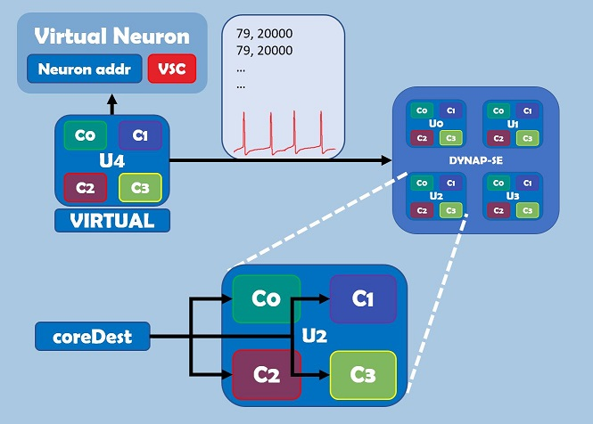

Dynap-se Spike Generator¶
API¶
- dynapseSpikesGenerator module
- InputPattern class
- InputEvent class
Table of content¶
Description¶
DYNAP-se control software cAER contains an useful module called FPGASpikeGenerator. This module allows the user to send customized (in address and interspike interval) spike patterns in specific location inside DYNAP-se.
A very simple way to understand the behavior of the Spike Generator is thinking about it as a VIRTUAL external chip outside DYNAP-se. His main advanatage, with respect to the physical ones, is the flexibility. Events can be completely customized: you can select which neurons will spike and the interspike interval between spikes.
Virtual chip can be “connected” to the physical ones and stimulated whenever you want, making simpler the creation of customize tests for neural structure in DYNAP-se.
His main drawback is, for now, the connectivity limitation. Unfortunately only one physical chip can be connected, at the same time, to the virtual one, although this is enough to run complex test patterns. For instance, making a connection between one neuron in the virtual chip and Chip 0, will make impossible any other connection with the other 3 Chips.
To specify event in the library, we have to provide two info:
- event address: the virtual neurons that has to spike
- core destination: to which of the cores in the destination chip we want to send spikes. It goes from 0000 (0) -> no core, to 1111 (15) -> all 4 cores. Is recommended to use this last one, to be sure all core are stimulated
- time : it’s the delay from the previous spike (no matter which neuron)
Customized spiking patterns must be specified preparing a .txt file, containing two parameters:
- Source Neuron Address : number resulting by the combination of parameters
Neuron Address,Virtual source chipandCore Dest. The first two are represent can be seen as neuron address and neuron core (yes, core, not chip) of the virtual chip. The third one, instead, is used for event routing. It specify, in fact, on which cores of the destination chip the spike will be trasmitted. For more informations visit DYNAP-se user guide - Interspike Interval : number that represent the time between the current event and the previous one specified in the file, expressed in ISI base multiple (the first event delay can be considered as an initial delay). For more information visit DYNAP-se user guide
In the following image isummarized the main characteristics of the Spike Generator. As said before, can be considered as a virtual chip (U4) made with Virtual Neurons. The txt file specify the characteristics of the generated events: address of the source neuron, interspike interval and core destinations. Note that in this case U2 has been chosen as destination chip.

An example of .txt file is the following one:
ISIBase = 90 corresponding to 1 us time step
79, 20000
79, 20000
79, 20000
79, 20000
79, 10000
79, 10000
142, 20000
142, 20000
In this example address 79 is:
Neuron Address1Virtual source chip0Core dest15 (hot-encoded 1111, meaning to all cores)
While address 143 is:
Neuron Address2Virtual source chip0Core dest14 (hot-encoded 1110, meaning to cores 1, 2 and 3)
This file will generate 4 events with 20 ms of interspike interval (corresponding to 50Hz)
on Neuron 1, then 2 events with 10 ms delay between them, finally 2 events on
Neuron 2 with 20 ms delay
It is evident that generating this file manually is not easy. Here is where class SpikesGenerator come to help. Inside there are functions that permit the user to create in many ways desired event patterns.
Functionalities¶
- Create events from lists containing informations about the neurons and absolute times
- Create constant frequency events as well as linear frequency modulation
- Encode a certain signal in spikes with threshold encoding methodology: every time the signal step up or step down of an amount bigger than a threshold, a spike is generated. Maximum and minimum firing frequency depend on threshold amplitude
- Plot generated spike pattern. If they come from an encoded signal, it can be plotted too
- Write output .txt file containing coded events
- Possibility to import events from a .txt file, plot them and add new patters
- Possibility to stack as many patterns as needed just calling the apposite functions
Tutorial¶
This tutorial explain a reasonable way of using Dynap-se spikes generator to create input patterns for Dynap-se board.
The main key of DynapseSpikesGenerator module stays on the InputPattern class. With this class you can create, using different functions, a custom pattern of spikes. Every InputPattern, moreover, can be used as a building block to build the final pattern that will be uploaded into Dynap-se. It is like using LEGO blocks.
The general flow for creating a global pattern is:
define an InputPattern object, specifying the name and isiBase. the isiBase parameter is related to the time resolution of the spikes sent to Dynap-se and the maximum delay that can be obtained. It goes from 0 to 1000 and the usual values are: —–> 90 (1 us resolution, 65 ms maximum delay) —–> 900 (10 us resolution, 650 ms maximum delay)
With a isiBase of 900 (resolution of 10us), for example, a spike with a delay of 13 us will be sent instead after 10 us, while a 17 us delay becomes 20 us (rounding is applyed)
define for that InputPattern which type of pattern you want to create: single event, multiples, constant frequency, linear modulation, encoding of a signal, ecc. look at InputPattern documentation for more informations.
create as many InputPattern you want and then combine them together to obtain the final pattern
In this tutorial we will create a pattern that will involve all the types of pattern that can be created with the library.
Import libraries¶
As said in the Repository README, is recommended to setup your python environment such to have the working directory in the same parent folder as the one of the library. As alternative, you can add the library directory to the python path.
To import the module:
import DYNAPSETools.dynapseSpikesGenerator as DSG
We will need also numpy and matplot lib for our elaborations:
import numpy as np import matplotlib.pyplot as plt
Initialization¶
Before starting creating the network, i suggest to write all preliminary code, like:
plt.close("all") # Close all the plots that has been created # in the previous run isiBase = 900 # Setting isiBase for all patterns
In this case we have set isiBase to 900. This means that our patterns should have a resolution of 10us and a maximum delay of 655ms. We cannot ask the library to create, for example, events with a delay of 5us (it will be set as 0). At the same time we cannot ask for an interspike delay of 1s.
Create InputPatterns¶
In this first part we create all the patterns that then we will use for our final one.
We start with a single event:
# Create pattern Pattern1 = DSG.InputPattern(name = "Pattern1", isiBase = isiBase) # Choose virtual neuron address C, N = 0, 1 # Define pattern Pattern1.single_event(virtualSourceCoreId = C, neuronAddress = N, coreDest = 15, firePeriod = 0.5)
With this first pattern we make virtual neuron 1 of core 0 spike after a delay of 0.5s (firePeriod = 0.5). All neurons in the physical core connected to this virtual neuron will react to this event.
Then we create a pattern of events with custom interspike intervals:
# Create pattern Pattern2 = DSG.InputPattern(name = "Pattern2", isiBase = isiBase) firePeriod = [0.2, 0.4, 0.1, 0.5] # Choose virtual neuron address and parameters firePeriod = [0.2, 0.4, 0.1, 0.5] C = [1, 1, 1, 1] N = [1, 1, 1, 1] coreDest = [15, 15, 15, 15] # Define pattern Pattern2.multiple_events(virtualSourceCoreId = C, neuronAddress = N, coreDest = coreDest, absTimes=None, fireFreq=None, firePeriod = firePeriod)
In this example virtual neuron 1 of core 1 spikes 4 times with interspike delays chosen in firePeriod list (first spike after 0.2s, second one after 0.3 from first one, etc.). As can be observed, at every spike time must correspond a neuron address (C, N) and a destination core value.
An alternative way to define this pattern would be using absTimes or fireFreq parameters instead than firePeriod one:
# Equivalent with absTimes absTimes = [0.2, 0.6, 0.7, 1.2] C = [1, 1, 1, 1] N = [1, 1, 1, 1] coreDest = [15, 15, 15, 15] Pattern2.multiple_events(virtualSourceCoreId = C, neuronAddress = N, coreDest = coreDest, absTimes = absTimes, fireFreq=None, firePeriod = None) # Equivalent with fireFreq fireFreq = [5, 2.5, 10, 2] C = [1, 1, 1, 1] N = [1, 1, 1, 1] coreDest = [15, 15, 15, 15] Pattern2.multiple_events(virtualSourceCoreId = C, neuronAddress = N, coreDest = coreDest, absTimes = None, fireFreq = fireFreq, firePeriod = None)
We create then a pattern with spikes at a constant frequency, lasting 1 second
# Create pattern Pattern3 = DSG.InputPattern(name = "Pattern3", isiBase = isiBase) # Choose virtual neuron address C, N = 0, 1 # Define pattern Pattern3.constant_freq(virtualSourceCoreId = C, neuronAddress = N, coreDest = 15, fireFreq = 50, initDelay = 0.5, duration = 0.5)
In this case again neuron 1 of core 0 (the same one as the first pattern) spikes at 50Hz for 0.5s. The first spike that will be created will have 0.5s initial delay.
Lastly we create a conversion in spikes of a sinusoidal signal using the threshold algorithm.
# Create pattern Pattern4 = DSG.InputPattern(name = "Pattern4", isiBase = isiBase) # Define sinusoidal signal with 1000 samples freq = 1 t = np.linspace(0, 1, 1000) y = np.sin(2*np.pi*freq*t) # Choose virtual neuron addresses C, NUp, NDw = 2, 5, 6 # Define pattern Pattern4.constant_freq(virtualSourceCoreId = C, neuronAddressUpCH = NUp, neuronAddressDwCH = NDw, coreDest = 15, threshold = 0.05, t = t, y = y, noiseVar = 0, initDelay = 0.5)
In this case virtual neurons 5 and 6 of core 2 encode a 1 period 1Hz sinusoidal signal, defined with 1000 time samples. Increasing the time resolution would for sure increase the time delay accuracy of the converted spikes, but there is a limit at that. Remember always that the isiBase put a limit to the delay precision that can be achieved. With an isiBase of 900, meaning a resolution of 10us, asking for an interspike delay of 21us is the same as asking for a spike delay of 20us.
Combining input patterns¶
Now that we have create all the patterns we need, we can combine them to create our definitive pattern. What we need to do is to create a list (or a tuple) of patterns, stacking them in such a way to compose the wanted pattern. For example:
finalPattern = (Pattern1, Pattern3, Pattern2, Pattern1) DSG.plot_spikes(*finalPattern)
Note: The * before finalPattern is used to unpack the tuple for the function.
In fact, the same result could be obtained in the following way:
DSG.plot_spikes(Pattern1, Pattern3, Pattern2, Pattern1)
This configuration will create the following pattern:

The following configuration, instead:
finalPattern = (Pattern1, Pattern2, Pattern3, Pattern4) DSG.plot_spikes(*finalPattern)
will result in this way:

So, combining different basic patterns is possible to create infinite number of combinations, or even create repetitive patterns for a certain time.
Writing final pattern to txt file¶
Once tuned the final pattern to match our needings, we need only to create the output .txt file with all the encoded spikes. Doing this operation is really trivial:
DSG.write_to_file(*finalPattern, fileName = "myPattern.txt)
The output .txt file will be created in the python working folder.